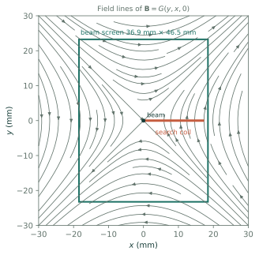

Stokes: \(\iint_S(\nabla\times\mathbf F)\cdot d\mathbf S=\oint_{\partial S}\mathbf F\cdot d\mathbf r\), with \(\partial S\) traversed by the right-hand rule (thumb along the normal of \(S\))
On a simply connected domain, \(\nabla\times\mathbf F=\mathbf 0\iff\mathbf F=\nabla f\); then \(\int_C\nabla f\cdot d\mathbf r=f(Q)-f(P)\) for \(C\) from \(P\) to \(Q\)
\(\nabla\cdot(\nabla\times\mathbf F)=0\) for \(C^2\) fields; on all of \(\mathbb R^3\), a \(C^1\) field \(\mathbf G\) is a curl \(\iff\nabla\cdot\mathbf G=0\)
Divergence Theorem: \(\iint_{\partial W}\mathbf F\cdot\mathbf n\,dS=\iiint_W\nabla\cdot\mathbf F\,dV\), with \(\mathbf n\) the outward normal
Entering answers
Type numbers or formulas: fractions, decimals, pi, e, sqrt(...), sin(...), cos(...), exp(...), log(...). Use ^ for powers and radians for angles; separate vector components with commas.
Any equivalent form is accepted: 3/2, 1.5, and 6/4 are all the same answer, and so are (4/3)pi r^3 and 4 pi r^3/3.
Decimals must be correct to two decimal places (answers smaller than 0.1 need two significant digits). Exact forms such as 6pi sqrt(37) are always fine.
LaTeX such as \frac{1}{2}, \sqrt{2}, \pi, and \phi also works. A potential function may differ from ours by a constant. Units are shown beside each box.
Hints and solutions are built into the page, and nothing you type is sent anywhere: your answers and notes stay in this browser. This is an ungraded practice site.
Earth turns once each sidereal day (one turn relative to the stars), carrying the air, the oceans, and Monterey Bay with it. Seen from space, everything on the planet shares one rigid rotation. The curl of that motion measures how fast it spins things locally. Its part along the local vertical slowly turns the swing of a Foucault pendulum, a long pendulum free to swing in any direction. How much circulation (velocity added up along a loop) does Earth’s spin carry around Monterey’s circle of latitude, and which way should a small paddle wheel’s axle point to spin fastest?
Everything on Earth turns rigidly with it. This is the background spin every wind and current shares; the winds and currents themselves are ignored.
Earth is a sphere of radius \(R\) centered at the origin, with the \(z\)-axis through the North Pole. Its slight flattening at the poles is ignored.
3So the model is
Velocity seen from space: \(\mathbf v=\boldsymbol\Omega\times\mathbf r\) (km/s), where \(\boldsymbol\Omega=(0,0,\Omega)\) is Earth’s angular velocity (rad/s) and \(\mathbf r=(x,y,z)\) is position (km)
Monterey’s parallel \(C\) (its circle of latitude): \(x^2+y^2=(R\cos L)^2\), \(z=R\sin L\)
Polar cap \(S\) (all of Earth’s surface north of \(C\)): the part of the sphere \(x^2+y^2+z^2=R^2\) with \(z\ge R\sin L\)
The model, in a cut through Earth’s axis (not to scale): Earth rotating rigidly about the \(z\)-axis, Monterey’s parallel \(C\) at latitude \(L\), and the polar cap \(S\) (teal) that \(C\) bounds. At Monterey, compare the local vertical with the direction of Earth’s axis and \(\boldsymbol\Omega\).
Watch
A University of Nottingham physicist explains how a Foucault pendulum shows Earth rotating, and why it would not work at the equator; this is the same rotation whose latitude dependence you meet at Monterey.
Videos load from YouTube only when you press play.
First, on paper
With your group, on paper or a shared whiteboard, work down this list before typing any answers. Items marked “Before (b)” set up that part; “After (c)” items check it.
Sketch a cut through Earth’s axis with \(C\), \(S\), and \(\boldsymbol\Omega\). Check that \(\mathbf v=\boldsymbol\Omega\times\mathbf r=\Omega(-y,x,0)\), and mark its direction along \(C\).
Orient \(C\) eastward: show that this is counterclockwise seen from above the North Pole and pairs with the cap normal pointing away from Earth’s center.
Predict: is the flux of \(\nabla\times\mathbf v\) through the cap \(S\) bigger than, smaller than, or equal to that through the flat disk spanning \(C\)?
With (b): compute the flux through \(S\) directly (\(\mathbf n=\mathbf r/R\), \(dS=R^2\sin\phi\,d\phi\,d\theta\), the right range of \(\phi\), symmetry), then through the flat disk, and compare both with the circulation.
Find the limit of (circulation)/(area) for a tiny horizontal circle of radius \(\epsilon\) at Monterey as \(\epsilon\to0\), and how long a Foucault pendulum there takes to turn its swing once around (rate \(\Omega\sin L\)).
Whiteboard kit ↓One light image with this problem’s figure, model equations, checklist, and parts (a)–(c). Paste it, or crop pieces of it, onto your group’s shared whiteboard.
aFor \(\mathbf v=w(-y,x,0)\), rotation at rate \(w\) about the \(z\)-axis (the model’s velocity with \(\Omega\) written as \(w\)), enter the three components of \(\nabla\times\mathbf v\), in rad/s.
A step in the right direction
The field is the same in every horizontal plane. Around a small square, the circulation per unit area tends to \(\partial_xv_2-\partial_yv_1\), the third component of \(\nabla\times\mathbf v\).
bFind the circulation \(\oint_C\mathbf v\cdot d\mathbf r\) of Earth’s rotational velocity around Monterey’s parallel \(C\) (latitude \(36.605^\circ\) N), traversed eastward (counterclockwise seen from above the North Pole). Use \(R\) in km, so the answer is in km²/s.
A step in the right direction
Monterey’s parallel \(C\) is a circle of radius \(R\cos L\). Seen from above the North Pole, \(\mathbf v\) is tangent to \(C\), points east (counterclockwise), and has the same speed \(\Omega R\cos L\) all the way around.
cA tiny paddle wheel is carried along by the rigidly rotating air at Monterey. It spins about its axle at half the component of \(\nabla\times\mathbf v\) along the axle. Which axle direction makes it spin fastest?
A step in the right direction
A paddle wheel feels only the part of \(\nabla\times\mathbf v\) along its axle. At Monterey, Earth’s axis is tilted up by \(L\) from north; find the angle \(\alpha\) to it for each candidate axle.
View full solution +
Follow the reasoning
Curl: \(\nabla\times\mathbf v=\big(0-0,\ 0-0,\ \partial_x(\Omega x)-\partial_y(-\Omega y)\big)=(0,0,2\Omega)=2\boldsymbol\Omega\) at every point, which is twice the angular velocity. On \(C\) the velocity \(\Omega(-y,x,0)\) is horizontal and tangent to \(C\), pointing east.
Orientation: parametrize \(C\) as \((R\cos L\cos t,\,R\cos L\sin t,\,R\sin L)\) with \(t\) increasing eastward, which is counterclockwise seen from above the North Pole. With your thumb pointing away from Earth’s center on the cap (upward on the flat disk), your fingers curl the same way, so these orientations are compatible.
Flux three ways: on the cap, \((\nabla\times\mathbf v)\cdot\mathbf n=2\Omega z/R\) with \(z=R\cos\phi\), and the cap is \(0\le\phi\le\pi/2-L\), so \[\iint_S\frac{2\Omega z}{R}dS=\frac{2\Omega}{R}\int_0^{2\pi}\!\!\int_0^{\pi/2-L}R^3\cos\phi\sin\phi\,d\phi\,d\theta=2\pi\Omega R^2\cos^2L.\] Through the flat disk the flux is \(2\Omega\cdot\pi(R\cos L)^2\). The circulation is the speed \(\Omega R\cos L\) times the length \(2\pi R\cos L\). All three give \(2\pi(7.292115\times10^{-5})(6371)^2\cos^2(36.605^\circ)\approx11{,}984.67\) km2/s. So the prediction should be “the same”: by Stokes’ theorem, every surface bounded by \(C\) carries the same flux of the curl.The cap, the flat disk, and the circulation around \(C\) all give \(\approx11{,}984.67\) km2/s, as Stokes’ theorem requires.
Circulation per unit area: for a tiny horizontal circle at Monterey, (circulation)/(area) \(\to(\nabla\times\mathbf v)\cdot\mathbf n_{\rm up}=2\Omega\sin L\approx8.70\times10^{-5}\) s−1, because the upward normal \(\mathbf n_{\rm up}=\mathbf r/R\) makes angle \(90^\circ-L\) with the axis.
Foucault pendulum: its swing turns at half that rate, \(\Omega\sin L\), so one full turn takes \(2\pi/(\Omega\sin L)\approx1.445\times10^5\) s, about \(40.1\) hours.
Paddle wheel: with unit axle \(\mathbf u\) it spins at \(\tfrac12(\nabla\times\mathbf v)\cdot\mathbf u=\Omega\,\mathbf k\cdot\mathbf u\). That is fastest (\(\Omega\)) for an axle parallel to Earth’s axis, \(\Omega\sin L\) for a vertical axle, and zero for any axle perpendicular to Earth’s axis, such as one pointing east.The spin \(\Omega\cos\alpha\) is largest for an axle parallel to Earth’s axis, about \(0.60\,\Omega\) for a vertical axle, and zero for an axle pointing east.
Reconciliation: the circulation is positive because eastward is the way Earth turns. Its size is just the ground’s speed at Monterey, \(\Omega R\cos L\approx0.373\) km/s, times the \(32{,}135\) km length of \(C\). A wind blowing east along \(C\) at speed \(u\) would add \(2\pi R\cos L\cdot u\), so the rigid-rotation assumption matters most, and it holds as long as winds are slow compared with \(0.37\) km/s.
c. Parallel to Earth's axis: pointing north, tilted up 36.6\(^\circ\) from the horizontal
Discussion
At the equator the swing does not turn at all; at the South Pole it turns once per sidereal day, in the opposite sense from Monterey. At the equator the local vertical is perpendicular to Earth’s axis, so the vertical component of the curl, \(2\Omega\sin0\), is zero. In the Southern Hemisphere \(\sin L<0\), so the swing turns counterclockwise seen from above; at the South Pole one turn takes \(2\pi/\Omega\approx23.93\) hours.
Think it through
What would a Foucault pendulum do at the equator, and at the South Pole? Use the vertical component of \(\nabla\times\mathbf v\).
Saved on this browser · Discussion prompt, not automatically graded
Lay a phone on a Qi wireless charging pad and it charges with no plug. A coil in the pad drives a rapidly oscillating magnetic field. By Faraday’s law, the changing magnetic field creates a circulating electric field, which pushes current around a coil in the phone. The total push around a loop is the electromotive force (EMF): the circulation of the electric field around the loop, measured in volts. Stokes’ theorem turns that circulation into a flux. How many volts does a small loop in the phone pick up, does tilting the loop change that, and what happens to a phone standing on its edge?
Building the model
1From the real world
Qi reference design A2, transmitter coil: outer diameter \(40\) mm, inner diameter \(19\) mm
Over the pad’s coil the magnetic field is vertical and uniform: \(\mathbf B=(0,0,B(t))\) with \(B(t)=0.001\sin(2\pi\cdot140000\,t)\) T. The \(1\) mT amplitude is assumed, not published.
Edge effects at the rim of the pad’s coil are ignored, so the model is best for loops over the middle of the coil.
Each receiver loop is a single turn of wire.
3So the model is
Faraday’s law: \(\nabla\times\mathbf E=-\partial\mathbf B/\partial t\). With \(b=B^\prime(t)\) (T/s), the rate at which the field changes, the induced electric field is \(\mathbf E=\tfrac b2(y,-x,0)\) V/m, with \(x,y\) in meters
EMF of a loop: \(\oint\mathbf E\cdot d\mathbf r\) (volts), the energy per unit charge given to a charge carried once around the loop
Flat loop: the circle \(x^2+y^2=0.02^2\) in the plane \(z=0\)
Tilted loop \(C\): where the plane \(z=0.004+0.36y\) meets the cylinder \(x^2+y^2=0.02^2\) (meters), counterclockwise seen from above
The model: a uniform vertical field \(\mathbf B(t)\) over the pad’s coil, the flat loop at \(z=0\), and the tilted loop \(C\) on the cylinder \(x^2+y^2=0.02^2\). Dotted lines show that \(C\) lies directly above the flat loop.
Watch
An engineering explainer on how wireless phone charging works, to put the charging pad and its coil from the problem in context.
Why the circulation around a loop equals the flux of the curl through any surface it bounds, which is what lets you replace the tilted loop by a flat disk.
Videos load from YouTube only when you press play.
First, on paper
With your group, on paper or a shared whiteboard, work down this list before typing any answers. Items marked “Before (b)” set up that part; “After (c)” items check it.
Sketch \(\mathbf E\) in the plane \(z=0\) for \(b>0\): clockwise or counterclockwise seen from above? Check Faraday’s law \(\nabla\times\mathbf E=-\partial\mathbf B/\partial t\).
Before (b): parametrize the flat loop \(x^2+y^2=0.02^2\), \(z=0\), counterclockwise seen from above.
After (b): confirm it by Stokes on the flat disk, naming the paired normal. Explain why this loop, in a plane perpendicular to \(\nabla\times\mathbf E\), has nonzero circulation, but a loop in the plane \(x=0\) (a phone on its edge) has none.
Before (c): describe \(C\), choose the planar surface it bounds, and write its upward vector area element. Predict: is the EMF around \(C\) bigger, smaller, or the same as around the flat loop?
After (c): explain why the tilt does not matter even though \(C\) is longer, and why parametrizing \(C\) directly gives the flat loop’s integral.
Whiteboard kit ↓One light image with this problem’s figure, model equations, checklist, and parts (a)–(c). Paste it, or crop pieces of it, onto your group’s shared whiteboard.
aFor the model field \(\mathbf E=\tfrac b2(y,-x,0)\), enter \(\nabla\times\mathbf E\), in V/m² (the same unit as T/s).
A step in the right direction
\(\mathbf E\) is the same in every horizontal plane. Around a small square, the circulation per unit area tends to \(\partial_xE_2-\partial_yE_1\), the third component of \(\nabla\times\mathbf E\).
bFind the EMF \(\oint\mathbf E\cdot d\mathbf r\) around the flat loop of radius \(0.02\) m in the plane \(z=0\), counterclockwise seen from above, as an expression in \(b\) (in volts, with \(b\) in T/s).
A step in the right direction
Parametrize the flat loop by the angle \(t\). Compare the direction of \(\mathbf E\) with the direction of travel \(\mathbf r^\prime(t)\): the dot product \(\mathbf E\cdot\mathbf r^\prime\) is the same at every point.
cFor the tilted loop \(C\), find the largest size of the EMF \(\oint_C\mathbf E\cdot d\mathbf r\) during one cycle of \(B(t)\), in volts.
A step in the right direction
The planar patch over the disk has vector area element \((0,-0.36,1)\,dA\); only its vertical part meets the vertical curl. The EMF is largest when \(B(t)\) changes fastest, where its graph is steepest.
View full solution +
Follow the reasoning
Faraday’s law check: \(\nabla\times\mathbf E=\big(0,\,0,\,\partial_x(-bx/2)-\partial_y(by/2)\big)=(0,0,-b)=-\partial\mathbf B/\partial t\), so the model field obeys Faraday’s law. For \(b>0\), at \((x,0,0)\) with \(x>0\) the field \((0,-bx/2,0)\) points in the \(-y\) direction, so \(\mathbf E\) circles clockwise seen from above.
Flat loop: on \(\mathbf r(t)=(0.02\cos t,0.02\sin t,0)\), \(\mathbf E\cdot\mathbf r^\prime=\tfrac b2\big(0.02\sin t(-0.02\sin t)-0.02\cos t(0.02\cos t)\big)=-\tfrac b2(0.0004)\), so \(\oint\mathbf E\cdot d\mathbf r=-0.0004\pi b\) V.
Stokes check: counterclockwise from above pairs with the upward normal \(\mathbf k\), and \((\nabla\times\mathbf E)\cdot\mathbf k=-b\) times the area \(0.0004\pi\) m2 gives the same \(-0.0004\pi b\) V.
Upright loop: the flat loop’s normal \(\mathbf k\) is parallel to \(\nabla\times\mathbf E\), the best case. A loop in the plane \(x=0\) has normal \((1,0,0)\), perpendicular to \(\nabla\times\mathbf E\), so the flux of the curl through its disk, and hence its EMF, is \(0\): in this model an upright phone does not charge.The flat loop’s normal is parallel to \(\nabla\times\mathbf E=(0,0,-b)\), giving \(-0.0004\pi b\) V; the upright loop’s normal is perpendicular to it, giving \(0\).
Tilted loop: \(C\) is an ellipse in the tilted plane, and its shadow on the \(xy\)-plane is the circle of radius \(0.02\) m. Take the planar patch \(z=0.004+0.36y\) over that disk, with upward vector area element \((0,-0.36,1)\,dA\). Then \((\nabla\times\mathbf E)\cdot(0,-0.36,1)=-b\), so the EMF is \(-b\pi(0.02)^2\), the same as for the flat loop (so the prediction should be “the same”): only the vertical part of the vector area meets the vertical curl. Parametrizing \(C\) directly agrees, because \(\mathbf E\) has no \(z\)-component, so \(z(t)\) never enters \(\mathbf E\cdot d\mathbf r\).
Peak EMF: with \(B(t)=0.001\sin(2\pi\cdot140000\,t)\) T, the rate \(b=B^\prime(t)\) peaks in size at \(0.001(2\pi)(140000)\approx879.6\) T/s. So the peak EMF is \(879.6\times\pi(0.02)^2\approx1.105\) V for each turn of the receiver coil.The EMF is proportional to \(-B^\prime(t)\), so its size peaks at \(\approx1.105\) V when \(B(t)\) crosses zero, a quarter cycle away from the peaks of \(B\).
Reconciliation: the EMF in (b) has the opposite sign to \(b\), as Lenz’s law requires: counterclockwise is against the clockwise \(\mathbf E\). About a volt per turn means a receiver coil with several turns reaches several volts. The assumption that matters most is the \(1\) mT amplitude: it is assumed, not taken from the specification, and the EMF is proportional to it.
Final answers
a.\(\left(0,\ 0,\ - b\right)\) V/m2
b.\(- 0.0004 \pi b\) V
c.\(0.112 \pi^{2}\) V
Discussion
The EMF is multiplied by the number of turns, and the tilted circular coil gets less by the factor cos 30° ≈ 0.87. Each turn is a loop with the same flux change, so the turns add. A circle of radius r tilted by 30° has vector area πr² n, whose vertical component is only πr² cos 30°, so the flux of the vertical field drops by that factor. The model loop C instead kept a full disk as its shadow, which is why its EMF did not change.
Think it through
How does the EMF scale with the number of turns in a real receiver coil? And why would a circular coil tilted by \(30^\circ\) get less EMF than the tilted loop \(C\)?
Saved on this browser · Discussion prompt, not automatically graded
The Large Hadron Collider (LHC) at CERN, on the French–Swiss border, sends two proton beams around a 27 km ring. Its 1232 superconducting dipole magnets bend the beams around the ring, and hundreds of quadrupole magnets focus them, squeezing the protons toward the middle of the beam pipe. Apart from the beam’s own small current, no current flows inside the pipe, and, as everywhere in nature, there are no magnetic monopoles. Which magnetic fields do these two facts allow? Why can no single magnet focus the beam in every direction at once? And how much magnetic flux passes through a search coil, a wire loop used to measure flux, inside a quadrupole?
Building the model
1From the real world
Ring circumference: \(26{,}658.883\) m
Main dipoles (bending magnets): \(1232\), field \(8.33\) T
Main arc quadrupoles (focusing magnets): \(408\), nominal gradient \(223\) T/m
Beam screen in the arcs: \(36.9\) mm wide, \(46.5\) mm high
The beam’s own current is ignored: by \(\mu_0I/(2\pi\rho)\), its field \(1\) cm away is about \(10^{-5}\) T, tiny next to the magnets’. So inside the beam screen \(\nabla\cdot\mathbf B=0\) and \(\nabla\times\mathbf B=\mathbf 0\).
Magnet fields are ideal and do not change along the beam; the ends of each magnet are ignored.
A hypothetical rectangular search coil lies in the plane \(y=0\), \(0\le x\le0.017\) m, along \(1\) m of a quadrupole. It fits inside the screen’s \(18.45\) mm half-width.
3So the model is
Coordinates in meters: beam along \(+z\), \(x\) horizontal and \(y\) vertical across the pipe
Dipole field \((0,8.33,0)\) T. Quadrupole field \(\mathbf B\) (T): the one field in part (a) that is possible, where \(G=223\) T/m, the gradient, is how fast the field strength grows with distance from the beam
Magnetic force on a proton moving along \(+z\): proportional to \(\mathbf k\times\mathbf B\)
Vector potential (T·m): any \(\mathbf A\) with \(\nabla\times\mathbf A=\mathbf B\)

Cross-section of a quadrupole around the beam pipe (millimeters; beam along \(+z\), out of the page): the four magnet poles (gray), with the \(36.9\times46.5\) mm beam screen and the search coil (orange) along the positive \(x\)-axis in the plane \(y=0\).
Watch
An animated lesson on the four-pole quadrupole magnets that focus particle beams, with the field lines around the beam pipe, as in the LHC arc magnets of the problem.
Starting at the divergence segment (2:15), a visual account of divergence as net outflow and curl as rotation, the two tests you apply to magnetic fields.
Videos load from YouTube only when you press play.
First, on paper
With your group, on paper or a shared whiteboard, work down this list before typing any answers. Items marked “Before (b)” set up that part; “After (c)” items check it.
Sketch the cross-section in the figure with the coil; mark where \(\mathbf B\) is weak or strong, and whether it points up (\(+y\)) or down along the coil.
Prove \(\nabla\cdot(\nabla\times\mathbf F)=0\) for \(C^2\) fields. Explain why a field with nonzero divergence is never a curl, so never a magnetic field.
For (a): find the divergence and curl of each option. After (a): compute \(\mathbf k\times\mathbf B\) and show that it pushes protons toward the axis in one transverse direction and away in the other.
For (b): write the component equations of \(\nabla\times\mathbf A=\mathbf B\) with \(A_1=0\), integrate in \(x\), and choose the leftover functions of \((y,z)\). Then find a scalar potential \(\psi\) with \(\nabla\psi=\mathbf B\).
Before (c): predict whether a coil twice as wide would catch twice the flux, more, or less.
Explain, by cutting a closed surface into two patches and using Stokes’ theorem, why the flux of any curl (so of \(\mathbf B\)) through it is \(0\).
Whiteboard kit ↓One light image with this problem’s figure, model equations, checklist, and parts (a)–(c). Paste it, or crop pieces of it, onto your group’s shared whiteboard.
aIgnoring the beam’s own small current, a magnetic field inside the beam screen must have zero divergence and zero curl. With \(G=223\) T/m, which of these fields is possible there?
A step in the right direction
The two tests to apply to each option: the divergence (net outflow per volume) and the curl (circulation per area). Inside the beam screen both must be zero.
bUsing the quadrupole field \(\mathbf B\) from part (a), with \(G=223\) T/m, find a vector potential \(\mathbf A=(0,A_2,A_3)\) with \(\nabla\times\mathbf A=\mathbf B\). Enter its three components, in T·m.
A step in the right direction
Integrate equations (2) and (3) in \(x\), keeping the leftover functions \(g(y,z)\) and \(h(y,z)\); equation (1) then says what \(g_y-h_z\) must be.
cA rectangular search coil lies in the plane \(y=0\), with \(0\le x\le0.017\) m and \(0\le z\le1\) m (1 m along the beam). Find the magnetic flux of the quadrupole field through it in the \(+y\) direction (upward), in webers.
A step in the right direction
The coil’s normal is \(\mathbf j\) (up), so only \(B_y\) on the line \(y=0\) matters. A strip of width \(dx\) at distance \(x\) from the beam catches \(B_y(x,0)\,dx\) webers per meter of coil.
View full solution +
Follow the reasoning
Divergence of a curl: \(\nabla\cdot(\nabla\times\mathbf F)=\partial_x(\partial_yF_3-\partial_zF_2)+\partial_y(\partial_zF_1-\partial_xF_3)+\partial_z(\partial_xF_2-\partial_yF_1)=0\), because mixed partials of \(C^2\) functions are equal. So a field with \(\nabla\cdot\mathbf G\ne0\) cannot be a curl \(\nabla\times\mathbf A\).
Sorting the options: \(G(x,y,0)\) has divergence \(2G\) and \(G(x,y,-z)\) has divergence \(G\), so neither can be a magnetic field. \(G(-y,x,0)\) has divergence \(0\) but curl \((0,0,2G)\ne\mathbf0\), which would require a current. \(G(y,x,0)\) has divergence \(0\) and curl \((0-0,0-0,G-G)=\mathbf0\), so it is possible.Sorting the options: only \(G(y,x,0)\) has both zero divergence and zero curl.
Focusing: \(\mathbf k\times G(y,x,0)=G(-x,y,0)\). A proton displaced in \(x\) is pushed back toward the axis (focusing), but one displaced in \(y\) is pushed farther out (defocusing). A linear field that focused in both directions would have \(\mathbf B\propto(-y,x,0)\), which has nonzero curl. That is why accelerators alternate quadrupoles of opposite orientation.The force \(\propto\mathbf k\times\mathbf B=G(-x,y,0)\) pushes a proton displaced in \(x\) back toward the beam (focusing) but pushes one displaced in \(y\) farther out (defocusing).
Vector potential: with \(A_1=0\) the equations are \(\partial_yA_3-\partial_zA_2=Gy\), \(-\partial_xA_3=Gx\), and \(\partial_xA_2=0\). So \(A_3=-Gx^2/2+g(y,z)\) and \(A_2=h(y,z)\), and the first equation becomes \(g_y-h_z=Gy\); take \(g=Gy^2/2\) and \(h=0\). Then \(\mathbf A=\big(0,0,\tfrac{223}{2}(y^2-x^2)\big)\) T·m, and indeed \(\nabla\times\mathbf A=(223y,\ 223x,\ 0)\). (For the dipole, \((0,0,-8.33x)\) works.)
Scalar potential: \(\mathbf B=\nabla(Gxy)\), so \(\psi=223xy\). In this current-free region the quadrupole field has zero curl and zero divergence, so it is both a gradient and a curl.
Search coil: along the coil \(\mathbf B=(0,223x,0)\) points up, growing from \(0\) at the beam to \(223(0.017)\approx3.79\) T at the coil’s outer edge. The flux is \(\int_0^1\!\int_0^{0.017}223x\,dx\,dz=223(0.017)^2/2\approx0.0322\) Wb. Because \(B_y\) grows in proportion to \(x\), the flux grows like the width squared: a coil twice as wide would catch four times as much (though it would no longer fit inside the screen’s \(18.45\) mm half-width). Stokes check: with normal \(+\mathbf j\), the boundary runs up \(z\) along \(x=0\) (where \(A_3=0\)) and down \(z\) along \(x=0.017\) (where \(A_3=-223(0.017)^2/2\)), giving \(+223(0.017)^2/2\); on the edges parallel to the \(x\)-axis, \(\mathbf A\cdot d\mathbf r=0\).The flux per meter of coil is the area under \(B_y=223x\): a triangle of area \(\approx0.0322\) Wb. Doubling the width quadruples the area.
Closed surfaces: cut a closed surface along a closed curve into two patches. By Stokes, each patch’s flux of \(\nabla\times\mathbf A\) is the circulation of \(\mathbf A\) around the cut, traversed in opposite directions for the two patches, so the total is \(0\). Hence \(\mathbf B\) has zero flux through every closed surface: there are no magnetic monopoles.
Reconciliation: the flux is positive, matching the upward field along the coil. The field at the coil’s edge, about \(3.8\) T, is of the same order as the dipoles’ \(8.33\) T, so the flux is a sensible size for these magnets. The assumption that matters most is the ideal field: the answer is only as good as the constant \(223\) T/m gradient across the coil and along its whole meter.
It would still be a curl, but no longer a gradient. Every magnetic field has zero divergence, so a vector potential still exists. But inside the beam \(\nabla\times\mathbf B=\mu_0\mathbf J\ne\mathbf 0\), and any loop around the beam has circulation \(\mu_0\) times \(0.582\) A, so no scalar potential works across the screen. The beam’s field is so weak that the current-free quadrupole field is still very nearly right.
Think it through
What if the beam’s own current were included? Would the field inside the beam screen still be a curl? Would it still be a gradient?
Saved on this browser · Discussion prompt, not automatically graded
The aurora over Alaska glows where fast electrons crash into the upper atmosphere. ESA’s Cluster satellites found that the electrons are first accelerated in narrow electric structures that start several thousand kilometers up, while they spiral around Earth’s magnetic field lines. They gain several thousand electronvolts (keV); one electronvolt is the energy an electron gains across one volt. Lower down, near 100 km altitude, an east–west current called the auroral electrojet carries up to half a million amperes, and its magnetic field reaches the ground. How much energy does an electron pick up along its spiral, how strong is the electrojet’s field at the ground, and why does one field with zero curl have a potential while the other does not?
Building the model
1From the real world
Auroral electrons: accelerated to several keV
Acceleration structures: narrow, starting several thousand km up
Auroral electrojet: mostly east–west, near \(100\) km altitude
Electrojet current: up to about half a million amperes
The force field \(\mathbf F\) is an illustrative stand-in for a real acceleration structure, scaled so that lengths are in thousands of km and energies in keV.
The spiral is drawn far wider than a real electron’s spiral (radius of meters) so that it is visible.
The electrojet is a straight line current \(I=5\times10^5\) A along the \(x\)-axis (east) at height \(h=100\) km over flat ground. The real current is spread out and changes from storm to storm.
3So the model is
Electric force on the electron: \(\mathbf F=(2xz,\ 2yz,\ x^2+y^2-2)\) keV per \(1000\) km, with \(x,y,z\) in thousands of km (\(z\) up)
Electrojet field in tesla (SI units, \(y\) north, \(z\) up, off the line \(y=0\), \(z=h\)): \(\mathbf B=\dfrac{\mu_0I}{2\pi}\,\dfrac{(0,\,-(z-h),\,y)}{y^2+(z-h)^2}\), where \(\mu_0=4\pi\times10^{-7}\) T·m/A is the magnetic constant
Left: the model spiral \(\mathbf c(t)\) around a field line (radius exaggerated). Right: the electrojet as a line current at height \(h=100\) km, seen end-on, with circular field lines (not to scale).
Watch
NASA explains how solar plasma travels down Earth’s magnetic field lines to the poles and lights up the aurora, the setting of the electrons in the problem.
Videos load from YouTube only when you press play.
First, on paper
With your group, on paper or a shared whiteboard, work down this list before typing any answers. Items marked “Before (b)” set up that part; “After (c)” items check it.
Sketch the spiral and mark the sign of \(F_3=x^2+y^2-2\) along it: up or down? Show that \(\nabla\times\mathbf F=\mathbf 0\) on all of \(\mathbb R^3\).
For (a): find \(f\) by successive integration, writing the unknown \(g(y,z)\) and then \(h(z)\) explicitly.
Before (b): predict whether ten turns of the spiral instead of three would change the energy. After (b): explain why, and check that it is “several keV.”
Show that the electrojet field has \(\nabla\times\mathbf B=\mathbf 0\) off the line. Compute \(\oint\mathbf B\cdot d\mathbf r\) around a circle of radius \(\rho\) about the line, and use it to find the field on the ground directly below, in nanotesla.
After (c): explain why zero curl and nonzero circulation do not contradict each other for the electrojet field, and what is different about the domain of the field you chose.
Whiteboard kit ↓One light image with this problem’s figure, model equations, checklist, and parts (a)–(c). Paste it, or crop pieces of it, onto your group’s shared whiteboard.
aFind a potential \(f\) (in keV) with \(\nabla f=\mathbf F=(2xz,\ 2yz,\ x^2+y^2-2)\).
A step in the right direction
A potential \(f\) increases in the direction of \(\mathbf F\). Build it one variable at a time, keeping an unknown function of the remaining variables at each step.
bUsing part (a), find the energy (in keV) that the electric force \(\mathbf F\) gives the electron along the spiral \(\mathbf c(t)=(0.5\cos t,\ 0.5\sin t,\ 3-t/(2\pi))\), \(0\le t\le6\pi\), traversed downward from its top to the ground.
A step in the right direction
The spiral starts at \(\mathbf c(0)\) and ends at \(\mathbf c(6\pi)\), directly below it. For a gradient field, every path between these two points gives the same work.
cWhich of these fields is a gradient on its whole domain?
A step in the right direction
Zero curl gives a potential when every loop in the domain can shrink to a point without leaving it. Decide which domain each option lives on, and whether its loops can shrink.
View full solution +
Follow the reasoning
Zero curl: componentwise, \(\partial_yF_3-\partial_zF_2=2y-2y=0\), \(\partial_zF_1-\partial_xF_3=2x-2x=0\), and \(\partial_xF_2-\partial_yF_1=0\). So \(\mathbf F\) is conservative on the simply connected domain \(\mathbb R^3\). Along the spiral \(x^2+y^2=0.25\), so \(F_3=-1.75<0\): the force pushes the electron down, the way it travels (and outward, away from the field line).
Potential: \(f=\int2xz\,dx=x^2z+g(y,z)\). Then \(f_y=g_y=2yz\) gives \(g=y^2z+h(z)\), and \(f_z=x^2+y^2+h^\prime(z)=x^2+y^2-2\) gives \(h=-2z+C\). So \(f=x^2z+y^2z-2z+C\).
Energy along the spiral: by the fundamental theorem for line integrals the work is \(f(0.5,0,0)-f(0.5,0,3)=0-3(0.25-2)=5.25\) keV, which is “several keV.” So the prediction should be “no change”: ten turns or three, only the endpoints matter, and the same holds for real spirals, whose radii are meters, not hundreds of kilometers.On the spiral \(f=-1.75z\), so \(f\) rises steadily from \(-5.25\) keV to \(0\): a gain of \(5.25\) keV that depends only on the two endpoints.
Electrojet: for \(\mathbf B=\frac{\mu_0I}{2\pi}\frac{(0,-(z-h),y)}{y^2+(z-h)^2}\), the components give \(\nabla\times\mathbf B=\mathbf0\) wherever \(y^2+(z-h)^2\ne0\). On a circle of radius \(\rho\) about the line, \(\mathbf B\) is tangent with size \(\mu_0I/(2\pi\rho)\), so \(\oint\mathbf B\cdot d\mathbf r=\mu_0I\ne0\) (Ampère’s law). On the ground directly below, \(\rho=h=10^5\) m, so \(B=\frac{4\pi\times10^{-7}(5\times10^5)}{2\pi(10^5)}=10^{-6}\) T \(=1000\) nT.
Line versus point: there is no contradiction. The domain is \(\mathbb R^3\) minus a line, and a loop around the line cannot shrink to a point without crossing it, so zero curl does not force a potential (any “potential” would have to increase by \(\mu_0I\) each time around). Removing only a point leaves a simply connected domain, since loops slide off the point, and indeed \(\mathbf r/|\mathbf r|^3=\nabla(-1/|\mathbf r|)\). The rotation and induced fields have curl \((0,0,2\Omega)\) and \((0,0,-b)\), so they are not gradients.Around the removed line, a loop keeps circulation \(\mu_0I\ne0\), so \(\mathbf B\) has no potential there; around a removed point, loops slide off and shrink, and \(\mathbf r/|\mathbf r|^3=\nabla(-1/|\mathbf r|)\).
Reconciliation: the energy gain is positive because the vertical part of the force points down, the way the electron travels, and \(5.25\) keV sits inside the published “several keV.” For the ground field, the assumption that matters most is the straight-line current. The published half a million amperes is an upper value, and the same current spread over a wide band at the same height would give a weaker field directly below, so \(1000\) nT is an upper estimate for this geometry.
Final answers
a.\(x^{2} z + y^{2} z - 2 z+C\) keV
b.\(5.25\) keV
c. The point-source field \(\mathbf r/|\mathbf r|^3\), on \(\mathbb R^3\) minus the origin
Discussion
It is weaker by the factor \(1/\sqrt2\): about 707 nT. The ground point is \(\rho=\sqrt2\times100\) km from the current, and Ampère’s law gives a field of size \(\mu_0I/(2\pi\rho)\) tangent to the circle of that radius, so the field there is also tilted 45° from the horizontal.
Think it through
A magnetometer on the ground is not directly below the electrojet but 100 km to the side. Using only Ampère’s law and the geometry, how does the field strength there compare with the 1000 nT directly below?
Saved on this browser · Discussion prompt, not automatically graded
Problem 05Extension
What Happens Inside Stays Inside
Earth leaks heat from its interior through every square meter of its surface. The heat comes from radioactive elements in the rocks and from heat left over from the planet’s formation. From heat-flow measurements and models, Davies and Davies (2010) estimated the total at 47 terawatts (TW). The heat flux is the rate at which heat crosses a surface per unit area, in watts per square meter. The Divergence Theorem links the total heat leaving a closed surface to the heat produced inside it. What is the average heat flux at Earth’s surface, how much would each cubic meter produce if the heat came evenly from the whole interior, and how much of the heat flowing out of a continent comes up from the mantle below its crust?
Steady state: the heat flux does not change with time, so the heat leaving a region equals the heat produced inside it.
Thought experiment: heat is produced uniformly throughout the whole Earth. This only gives a reference value to compare with the crust.
Continental crust is \(35\) km thick, with heat production \(H(z)=2.5\,e^{z/10}\ \mu\)W/m3 (\(z\) in km, \(-35\le z\le0\)): largest at the surface and falling by a factor of \(e\) every \(10\) km down.
In the crust, heat flows only vertically, as under a wide, uniform continent.
3So the model is
Divergence Theorem: \(\iint_{\partial W}\mathbf q\cdot\mathbf n\,dS=\iiint_W\nabla\cdot\mathbf q\,dV\), where \(\mathbf q\) is the heat flux (W/m2) and \(\nabla\cdot\mathbf q\) is the heat production (W/m3)
Whole Earth (thought experiment): \(\mathbf q=\tfrac H3(x,y,z)\) on the ball of radius \(R\), where \(H\) (W/m3) is the heat produced per cubic meter
Crust: \(\mathbf q=(0,0,q(z))\) with \(q^\prime(z)=H(z)\), surface value \(q(0)=73\) mW/m2, and mantle heat flux \(q(-35)=q_m\) (mW/m2) entering the base
Left: heat leaving Earth through its surface. Right: the crustal column, with heat leaving its top at 73 mW/m² and the unknown mantle flux \(q_m\) entering its bottom.
Watch
A short geoscience lesson on how heat moves from Earth’s interior to the surface and what controls heat flow, the setting of the Earth heat-budget problem.
The divergence theorem: outward flux through a closed surface equals the integral of the divergence over the enclosed volume, the tool for relating surface heat flow to heat produced inside.
Videos load from YouTube only when you press play.
First, on paper
With your group, on paper or a shared whiteboard, work down this list before typing any answers. Items marked “Before (b)” set up that part; “After (c)” items check it.
Sketch the crustal column’s six faces with outward normals (the bottom’s points down); mark which carry heat and the sign of \(\mathbf q\cdot\mathbf n\) on each.
For (a): use \(\mathbf n=\mathbf r/R\) to turn the total heat flow into an average outward flux.
For (b): compute \(\nabla\cdot\mathbf q\), then check the Divergence Theorem on the ball by computing the surface integral directly.
Before (c): predict whether \(q_m\) is bigger or smaller than \(73\) mW/m², and why. Then apply the Divergence Theorem to the column.
Compare \(H\) from (b) with the crust’s \(2.5\ \mu\)W/m3 at the surface. What does this suggest about where Earth’s heat-producing elements are?
Whiteboard kit ↓One light image with this problem’s figure, model equations, checklist, and parts (a)–(c). Paste it, or crop pieces of it, onto your group’s shared whiteboard.
aFind the average outward heat flux through Earth’s surface, in mW/m².
A step in the right direction
The 47 TW is the total outward flux through the whole sphere; the average flux is that total divided by the area \(4\pi R^2\), with \(R\) in meters.
bThought experiment: suppose the 47 TW were produced uniformly throughout Earth’s volume, with steady flux \(\mathbf q=\tfrac H3(x,y,z)\). Find the heat production \(H\), in nW/m³ (1 nW = \(10^{-9}\) W).
A step in the right direction
Each small volume \(dV\) makes heat \(H\,dV\), which leaves as the net outflow \((\nabla\cdot\mathbf q)\,dV\). Adding up all the pieces gives the flux through the surface.
cApply the Divergence Theorem to a column of continental crust to find the mantle heat flux \(q_m\) entering the bottom of the crust (flowing upward at \(z=-35\) km), in mW/m².
A step in the right direction
Only the top and bottom faces carry heat, and the outward normal on the bottom points down. The shaded area under \(H(z)\) is the heat made in the column per unit of top area.
View full solution +
Follow the reasoning
Average flux: on the sphere the outward normal is \(\mathbf n=\mathbf r/R\), and \(\iint\mathbf q\cdot\mathbf n\,dS=47\) TW. Dividing by the area \(4\pi R^2=5.10\times10^{14}\) m2 gives an average of \(92.15\) mW/m2.
Uniform production: \(\nabla\cdot\big(\tfrac H3(x,y,z)\big)=H\). Directly, \(\mathbf q\cdot\mathbf n=\tfrac H3R\) on the sphere, so the flux is \(\tfrac H3R\cdot4\pi R^2=H\cdot\tfrac43\pi R^3\), which checks the Divergence Theorem. Setting it equal to \(47\) TW gives \(H=47\times10^{12}/(1.083\times10^{21})\approx4.34\times10^{-8}\) W/m\(^3=43.39\) nW/m3.
Crustal column: take \([0,a]\times[0,a]\times[-35,0]\) km with \(\mathbf q=(0,0,q(z))\) and top area \(A=a^2\). The four sides have horizontal normals, so \(\mathbf q\cdot\mathbf n=0\) there. The top has \(\mathbf n=\mathbf k\) and flux \(73A\); the bottom has outward \(\mathbf n=-\mathbf k\) and flux \(-q_mA\). Since \(\nabla\cdot\mathbf q=q^\prime(z)=H(z)\), \[(73-q_m)A=A\int_{-35}^0 2.5e^{z/10}\,dz\ \ (\mu\text{W/m}^3\cdot\text{km})=25(1-e^{-3.5})A\text{ mW/m}^2,\] so \(q_m=73-24.25\approx48.75\) mW/m2. So the prediction should be “smaller”: \(q_m<73\) mW/m2 because the crust adds its own heat on the way up.The crust adds \(25(1-e^{-3.5})\approx24.25\) mW/m2 on the way up, so the mantle supplies \(q_m\approx48.75\) mW/m2 of the \(73\).
Interpretation: the crust near the surface produces about \(2.5\ \mu\)W/m3, roughly 60 times the whole-Earth average \(H\approx0.043\ \mu\)W/m3 from (b). So heat-producing elements are strongly concentrated in the continental crust. In this model the crust itself supplies about a third of the 73 mW/m2 flowing out of a continent.
Reconciliation: \(q_m\) is positive, so heat flows up out of the mantle, as it must. The global average of \(92.15\) mW/m2 is above the continental \(73\) mW/m2: \(13.8\) TW at a mean of \(73\) mW/m2 means the continents cover about \(1.9\times10^{14}\) m2, so the remaining \(33.2\) TW leaves the rest of the surface at about \(103\) mW/m2. The assumption that matters most for \(q_m\) is the crust’s heat-production profile: its \(2.5\ \mu\)W/m3 and \(10\) km scale are assumed, and \(q_m\) depends directly on them.The global average of \(92.15\) mW/m2 sits between the continental \(73\) mW/m2 and about \(103\) mW/m2 for the rest of the surface.
You would report \(q_m\approx-48.75\) mW/m2, and the minus sign gives the error away. With the upward normal the bottom term becomes \(+q_mA\), so \(73+q_m=24.25\). A negative \(q_m\) would mean heat flowing down into the mantle, but heat flows upward out of the hot interior. With the correct outward (downward) normal, the bottom flux is \(-q_mA\), negative because heat enters there.
Think it through
In the crustal column, suppose you had used the upward normal on the bottom face by mistake. What mantle heat flux would you have reported, and how could you tell it was wrong?
Saved on this browser · Discussion prompt, not automatically graded
Field notes
Where the numbers come from
Each card lists the published values this week’s problems use, with a link to the original source and a CSV download. Everything else in a problem is a labeled assumption.
Published geodetic constants
IERS useful constants
International Earth Rotation and Reference Systems Service (Paris Observatory), accessed November 17, 2026. The nominal angular velocity is exact by definition; the measured mean value agrees to the digits shown.
NASA NSSDC Earth Fact Sheet, accessed November 17, 2026. The volumetric mean radius is the radius of a sphere with Earth’s volume; the real Earth is slightly flattened at the poles.
The Qi Wireless Power Transfer System, Power Class 0, Part 4: Reference Designs (v1.2.3)
Wireless Power Consortium, February 2017, Section 2.2.2 (Power Transmitter design A2), Table 1; copy hosted on a Milwaukee School of Engineering course page. Other Qi designs use other coils and frequencies.
European Space Agency science pages (last updated September 1, 2019), describing Cluster satellite observations of the regions that accelerate auroral electrons.
Quantity
Published description
Electron energies after acceleration
several keV (thousand electronvolts)
Acceleration structures
narrow, U-shaped, starting several thousand kilometres up
University of Alaska Fairbanks Geophysical Institute. Typical, storm-dependent values; the current’s geometry is far more complex than a straight line.
Earth’s surface heat flux (Davies and Davies, 2010)
J. H. Davies and D. R. Davies, Solid Earth 1, 5–24 (2010). Abstract: “Our final preferred estimate is 47\(\pm\)2 TW.” The continental figures are from their preferred analysis (Section 5).


![Left: a side view, looking along the x-axis, with y and z in millimeters: the disk of radius 0.02 m edge-on as a horizontal segment at z = 0, the planar patch z = 0.004 + 0.36 y bounded by the tilted loop C as a tilted segment, the vector area element (0, -0.36, 1) dA drawn perpendicular to the patch with its vertical and horizontal parts dotted, and dashed vertical lines for the direction of the curl of E. Right: one cycle of B(t) in millitesla over 7.14 microseconds, with orange tangent lines where the graph is steepest](assets/figures/w10-p2-c.svg?v=f6293a43fe)


.jpg){kind=link}

.jpg){kind=link}